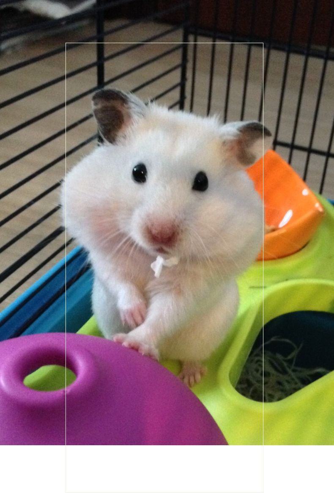
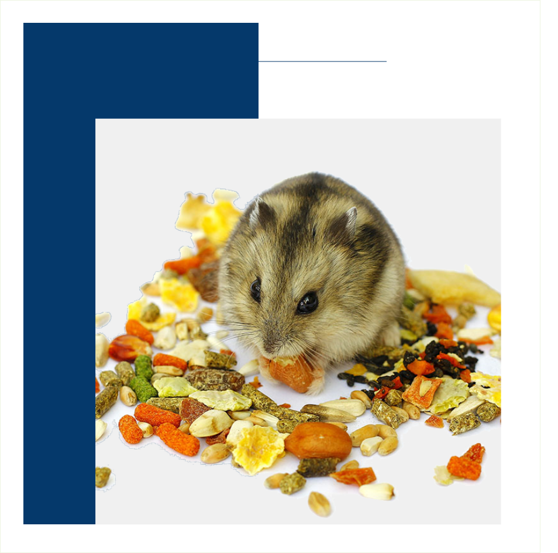
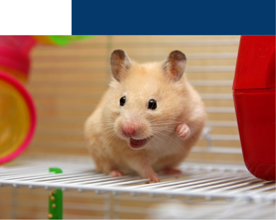

Introduction
A hamster will be happy in the confinements of their cage, providing they have toys, food and water. And, as long as you escape-proof their habitat and keep an eye on them when out of their cage, there is no need to worry about your hamster escaping.
But what happens if your hamster does manage to escape? How long can a hamster survive on their own and how easy is it to entice them back?
WHY DO HAMSTERS
TRY TO ESCAPE?
Most hamsters don’t even dream of a bigger world beyond the bars. That is because they are quite content playing with their toys, running through their tunnels and being waited on hand and foot by their human servants.
There will, however, be a handful of hamsters who suffer from boredom. The daily grind of eat, sleep and play just aren’t fulfilling enough, and they will look for ways in which to escape. If your hamster excessively gnaws on their bars, then it could be a sign of monotony and you should look at other ways in which they can be entertained.
Regardless of how big your hamsters’ cage is; you should ensure that they have plenty of handling time outside of their habitat. But beware, hamsters look for opportunistic moments in which to escape. Therefore, in order to stop any hamster escapees, you need to make sure that they are supervised at all times, and, if you are prone to distraction, then set boundaries for playtimes such as placing them in an empty bath, playpen or hamster exercise ball. After all, it is always better to be safe than sorry.
CAN HAMSTERS
SURVIVE
IF THEY GO MISSING
You only need to turn your back for a second for a hamster to seize the moment and escape. Quick, nimble and incredibly agile, hamsters can move at a startling pace. But can a hamster survive all alone in the big wide world?
Unfortunately, with poor eyesight and terrible gnawing habits, hamsters are incredibly vulnerable when left to their own devices. How long they can survive all alone for, will depend on a number of factors. This includes the health of the hamster itself, whether there are readily available food and water supplies, on the temperature of its surroundings and if there are any threats within the home – such as other pets, stairs or high ledges.
Hamsters love to chew and will nibble on anything including your furniture, doors, curtains and even electrical wiring – which can be dangerous to both them and you.
As hamsters have terrible vision, they rely on their other senses in order to guide them. This puts them at risk when they wander off without knowing where they are going – especially if they happen to stumble outdoors. Here bad weather conditions, predators, parasites and potential traps could all lead to fatality for your missing hamster.
HOW TO ENTICE
A HAMSTER BACK?
As hamsters are nocturnal your little runaway will be active at night. This is the time when you should conduct your search. Here are some simple things you could try to entice them back:
Try placing a mixture of fresh and dried food out for when they get the midnight munchies. Foods with a pungent aroma are best, as they will help to attract the attention of your hamster from its hidey-hole. Things such as peanut butter, apple slices and fresh green vegetables such as broccoli are especially tantalizing to their taste buds. Cucumber is also good to put out as it aids rehydration (just remember to take the skin off beforehand).
Listen out for any rustling. If your hamster is particularly stealth-like, you could try placing some tin foil under the food or in the corner of rooms to alert you to the sound of their tiny paws. You may also want to place flour around the food in the hope that they leave a trail for you to follow, back to their new home.
Place the cage on the floor with the wheel just outside the cage door. The temptation to run on it could just get the better of them.
1
2
3

HOW LONG CAN
A HAMSTER GO
WITHOUT FOOD?
Ideally, you would not want your hamster to be missing for longer than a week as, without regular food and water supplies, they will be unable to survive.
Hamsters are not any more capable of going without food and water than your average animal, contrary to popular belief.
They can only go 1-3 days total. When forced to go without, they will quickly become distressed, and then sick.
Actually, hamsters are fairly active and need plenty of sustenance, and water, as fuel. Deprived of this, they will suffer. They may not even survive!
To keep your hamster plump, healthy, and happy, always keep their food and water in stock.

A happy hamster should have no need to escape, especially one that is well-loved and looked after in a safe and secure cage. But accidents do happen, and if you do walk in one day to find the cage door open or bars chewed through, don’t panic! Chances are your little Houdini is hiding close by.